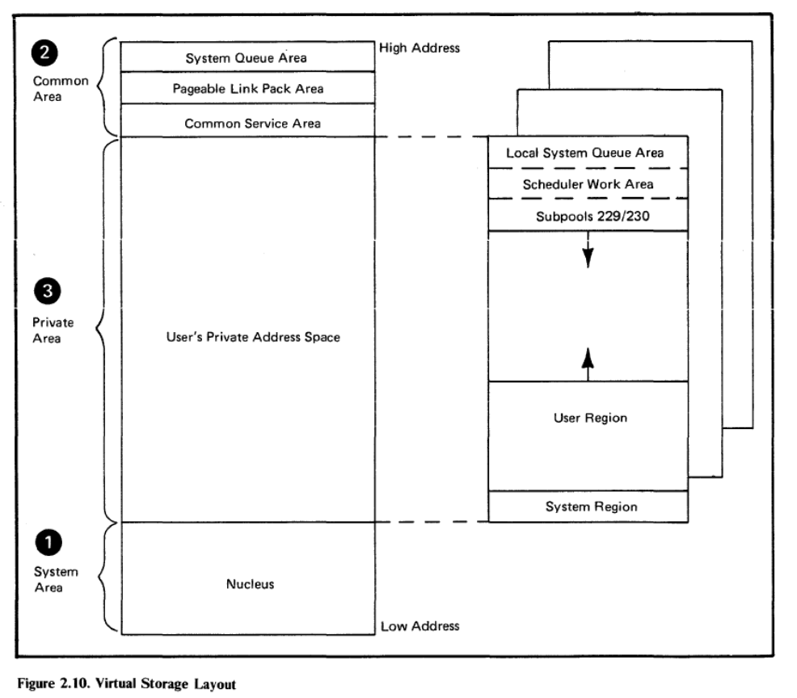
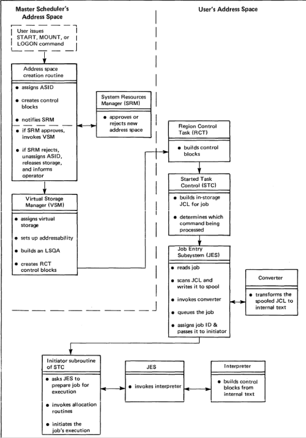
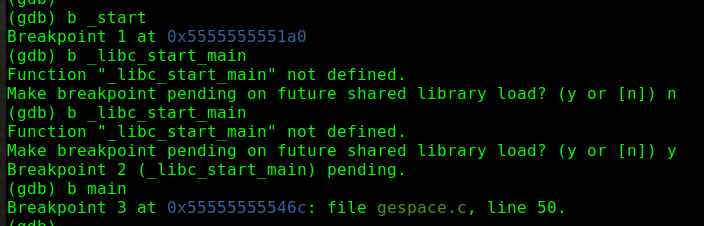

创立门庭：编写和透视主程序
创立门庭：编写和透视主程序
本讲的主要内容是“创立门厅”，顾名思义是创立一个空间，并且程序在空间内活动
本讲的主要内容是“创立门厅”，顾名思义是创立一个空间，并且程序在空间内活动
一、 两大空间
“如何组织和优化空间布局， 是很多学科的永恒话题”
1. 图灵时代
- CRT内存，图灵时代最牛的的记忆材料，电子打到屏幕上存在的静电残留，跟电流强度也有关系
- 最早的内存页交换机制：要跑算法，当时的总内存很小，再怎么精打细算都完全不够用。
- 图灵提出虚拟内存的概念，磁鼓便宜，存储空间比CRT内存要大，
- 磁鼓一个磁道相当于两个CRT内存页
- 紧急的调到CRT内存中，暂时不用的数据放到磁鼓（外存）中
2. IBM大型机
IBM大型机的时代，内存外存统一叫做storage。现在内存叫做memory，外存叫做storage
-
swap共享内存
-
节约物理内存的思想：用的进来，不用的先出去

-
动态内存翻译:软件用的是虚地址，虚地址查表后翻译成真实地址，然后访问物理内存。
-
内存地址翻译
内存交换机制的内容要很熟悉，swap in、 swap out，需要花时间掌握（详细参考张银奎老师讲解的计算机系统原理），这是一个很重要的基础内容
- 虚空间的布局
3. 两大空间
上面是用户空间，下面内核空间。用户空间很多个，内核空间只有一个
二、 为子请命
1. IBM父子进程机制

2. 代码分析
三、 建档立户
fork.c
关键在于父子进程 类似于人类的繁衍生息，复制基因给后代 以父进程为模板复制一份，有很多copy动作
进程描述符
软件世界中最核心的结构体 task_struct 第一个copy动作 很庞杂，抓关键即可 表述每个进程在内核里的基本数据结构，用这个基本数据结构来管理进程
mm指针指向 *mm_struct,虚地址 mm_struct:进程地址空间描述符（联想第一幅图-两大空间） 指针pgd指向页表 切进程使用不同的页表
mm_struct还指向vma，有很多个虚拟内存区，每一个虚空间叫做vma，挂在mmap的链表上
返璞归真 内存管理
内核始终映射在所有空间里，mvs用来管理 给每个进程一个虚空间——包括进程描述符、页表 使用进程时，使用进程对应的页表，也同时使用对应的翻译（字典的目录)

查表的过程
四、 添砖加瓦(Loader)
丰富进程、生机勃勃 使用gdb慢动作查看添砖加瓦的动作
gdb的关键指令：starti
starti命令
在新进程初始第一条指令下设一个断点
pstree观察进程树
使用!ps命令观察创建的gespace进程：
父进程发起（内核发起请求）-为子请命-内核创建空间 下一步：新进程里面跑初始化过程，添砖加瓦，装内容（新房装修买家具）
!cat命令观察进程空间
- !cat /proc/2139/status， 查gespace进程状态
- proc这个虚拟文件系统会在后面教授如何写代码实现 关键词：名字、ID、自己的内存区(内核放进来的东西)
查看当前进程空间里的内容 info shared
查看当前进程空间内的内容，
创建好空间后，内核分配让进程自己跑的代码，也就是这个.so文件，ld-linux-x86-64.so
查看虚文件系统：!cat /proc/2139/maps
创立好进程后，使用映射手段映射vma 现在gcc在x86 64位下创建的应用程序起始地址很有意思，很多个5，这是gcc编译选项决定的
- 操作系统loder放在比较高的位置 ldxxx.so
- loder有很多行，多个属性 64位机，7后面最多有11个f 最下面一行映射很高的系统调用，这里先不用深究 倒数第二行是栈空间，
info func
列出所有函数，_dl_开头的代表dynamic loder，
关键步骤埋断点
在启动函数下埋断点
b _start:接下来要启动的启动函数
b _libc_start_main：libc里面调用主函数的函数，
// loder设置断点，调用so
b main
 continue 查看info shared 冯诺依曼架构，程序写硬盘里面，需要时放在内存中调用，因此需要loder引导到内存
ld在用户空间内跑，不过与内核耦合度特别高，内核对其进行特殊处理，
创建每个进程时就映射到每个进程中，新进程从loder开始跑起

loder有一个_dl_start loder有两个名称: ld和dl dl是动态链接器的缩写
链接分为编译器和运行期链接，运行时有些信息是动态的，rt_ld.c动态链接
回顾 添砖加瓦
1. 链接
- 从_dl_start开始
- 加载动态库libc
- 加载其他库（这些库的索引放在表里，加载时遍历这张表的依赖)
- libc_start_main(libc编译时设计注册的入口
- 用户main函数，运行用户代码
写程序要有操作系统观念，程序都是在操作系统上运行
五、 文件映射
文件映射代码
性能对比
常见函数
六、 子承父业